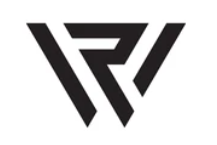

<ion-content>
    <div class="greetings" #logo>
        
        <h2 id="welcome"> Welcome</h2>
        <h2>to the best</h2>
        <h2><span>Webradio</span> app.</h2>
    </div>
</ion-content>

<ion-footer class="ion-no-border">
    <div class="action-buttons" #footer>
        <ion-button id="signup" routerLink="/registration">SIGN UP</ion-button>
        <ion-button fill="outline" id="login" routerLink="/login">LOG IN</ion-button>
    </div>
</ion-footer>